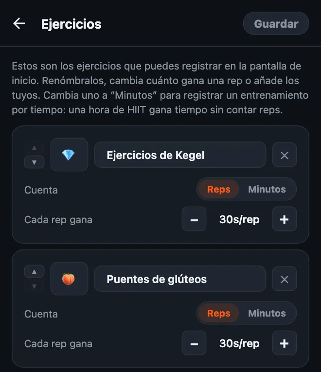
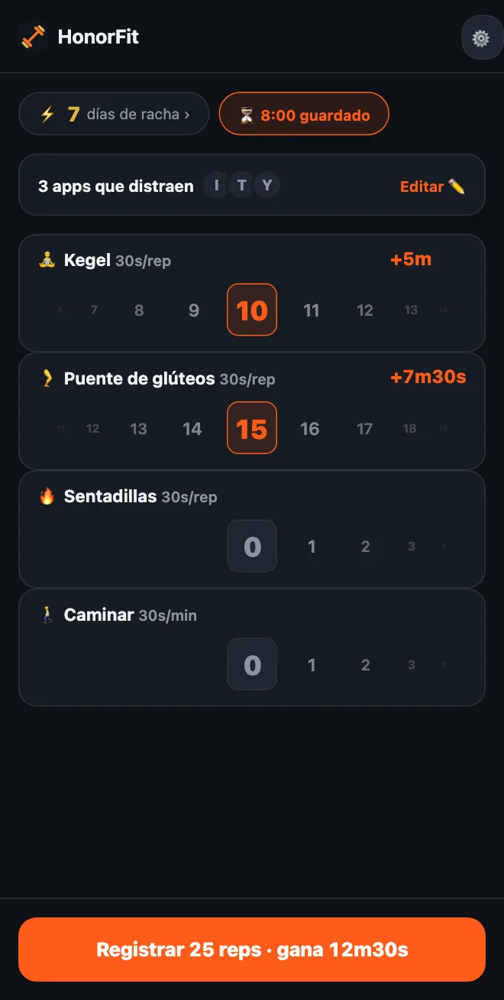

Haz ejercicios de Kegel para desbloquear el teléfono
¡Hola a todos! Hice HonorFit porque quería que unas flexiones se interpusieran entre Instagram y yo, sin tener que apoyar el teléfono para que una cámara las contara (hacer eso en una gasolinera no fue mi mejor momento, jaja). Haces las reps, las anotas tú mismo y tus apps se desbloquean.
Pero las flexiones no son para todo el mundo. Y una de las cosas que mejor encajan con esta idea no son flexiones para nada: los ejercicios de Kegel y los puentes de glúteos. Te cuento por qué y cómo configurarlo.
Por qué los Kegel encajan tan bien con el sistema de honor
Nadie puede ver un Kegel. Ni quien va a tu lado en el autobús, ni tus compañeros de trabajo, y desde luego tampoco la cámara de un teléfono. Una app que cuenta reps con la cámara, literalmente, no puede contarlos.
HonorFit ni lo intenta. Funciona con el sistema de honor: los haces, mueves la rueda hasta el número que hiciste y listo. Así puedes ganarte tu rato de TikTok en una reunión, en la fila del súper o en el sofá, y nadie se entera.
Y además resuelve lo que todo el mundo dice de los Kegel: «Ya sé que debería hacerlos, pero se me olvida». Si agarras el teléfono un montón de veces al día (sin juzgar, yo también), ahora cada una de esas veces es un recordatorio.
Los puentes de glúteos no son invisibles, pero son fáciles de hacer en el suelo o hasta en la cama, no necesitas nada y combinan muy bien con los Kegel.
Cómo configurarlo
Desde la versión 1.15.0, esto es gratis: puedes añadir hasta 3 ejercicios propios sin Pro, y los Kegel y los puentes de glúteos son sugerencias de un toque. (Pro, a US$3 al mes o US$19,99 en un pago único en EE. UU., los hace ilimitados; el precio varía según el país y la moneda, y la tienda te muestra el tuyo.) Así se hace:
- Toca el engranaje en la pantalla principal y luego la tarjeta Ejercicios.
- Toca la sugerencia Ejercicios de Kegel y luego Puentes de glúteos. No hay que escribir nada, y vienen con su propio emoji: 💎 para los Kegel y, sí, 🍑 para los puentes.
- Ajusta Cada rep gana con los botones −/+ (abajo te dejo mis sugerencias).
- Quita con la ✕ los que no vayas a usar (¿las dominadas, quizá?) y toca Guardar.

La guía completa del editor, con los entrenamientos por tiempo incluidos, está en cómo personalizar tus ejercicios en HonorFit.
¿Cuánto tiempo de pantalla debería ganar cada rep?
Yo empezaría con esto:
| Ejercicio | Cada rep gana | Una serie normal gana |
|---|---|---|
| 💎 Kegel | 30 segundos | 10 Kegel = 5 minutos |
| 🍑 Puente de glúteos | 30 segundos | 15 puentes = 7m30s |
| 🚶 Caminar (por tiempo) | 30 segundos por minuto | caminata de 20 minutos = 10 minutos |
O sea, una serie de 10 Kegel más 15 puentes te da unos 12 minutos y medio. Ajústalo a partir de ahí. Si acumulas tiempo demasiado fácil, baja los valores. Si te pillas anotando reps que no hiciste, el precio es demasiado alto, así que bájalo.

Una cosa sobre los Kegel: más no es mejor. Sitios de salud como MedlinePlus y Cleveland Clinic (en inglés) suelen hablar de series de unas 10, unas cuantas veces al día, y dicen que pasarse puede dejar los músculos demasiado tensos. Así que, por favor, ¡no conviertas esto en 100 Kegel a cambio de una hora de YouTube! Por eso yo les daría un buen valor por rep y dejaría que los puentes de glúteos, las sentadillas o una caminata cubran lo grande.
Los movimientos básicos
Soy desarrollador de apps, no entrenador ni fisioterapeuta, así que esto es solo la idea general. Los enlaces de arriba tienen las instrucciones como es debido.
- Kegel: aprieta los músculos que usarías para aguantar el pis, mantén unos segundos y luego relaja del todo otros pocos segundos. Eso es una rep. Sigue respirando e intenta no apretar el abdomen, los muslos ni los glúteos. (Cortar el chorro de orina a mitad es una forma de encontrar esos músculos una vez, no algo para practicar a menudo.)
- Puente de glúteos: túmbate boca arriba con las rodillas dobladas y los pies apoyados en el suelo. Aprieta los glúteos y sube la cadera hasta que el cuerpo forme una línea recta de los hombros a las rodillas, haz una pausa y baja despacio. Eso es una rep. A algunas personas les gusta añadir un Kegel arriba.
Si estás embarazada, en el posparto, tienes dolor pélvico o los Kegel te duelen, consulta primero con tu médico o con un fisioterapeuta de suelo pélvico. Te pueden decir qué es lo adecuado para tu cuerpo, y a veces la respuesta es «ahora mismo, Kegel no», y no pasa nada. Puedes configurar HonorFit con lo que te recomienden en su lugar.
Unos cuantos consejos
- Quédate con tres o cuatro ejercicios. Algo como Kegel, Puente de glúteos, Sentadillas y Caminar cubre estar sentado, tumbado y fuera de casa. Cada uno tiene su propia rueda, así que cuantos menos, más fácil.
- Usa un entrenamiento por tiempo para los días que sales. Cambia un ejercicio a Minutos (o toca la sugerencia Caminar o Yoga) para que una caminata o una clase también te den tiempo.
- Rutinas guardadas (Pro, se activa en Ajustes) te deja guardar hasta 3 combinaciones de reps, como «10 Kegel + 15 puentes», y aplicar una con un solo toque.
- Bloquea una o dos apps, no todo. La que se come tus noches.
Si los Kegel tampoco son lo tuyo, también escribí sobre opciones de bajo impacto que puedes hacer desde el escritorio.
HonorFit Blocker es un bloqueador de apps gratis para iPhone y Android. Sistema de honor, sin cámara, nada sale de tu teléfono. Los Kegel, los puentes de glúteos y hasta 3 ejercicios personalizados son gratis. ¡Ojalá a alguno de ustedes le guste!